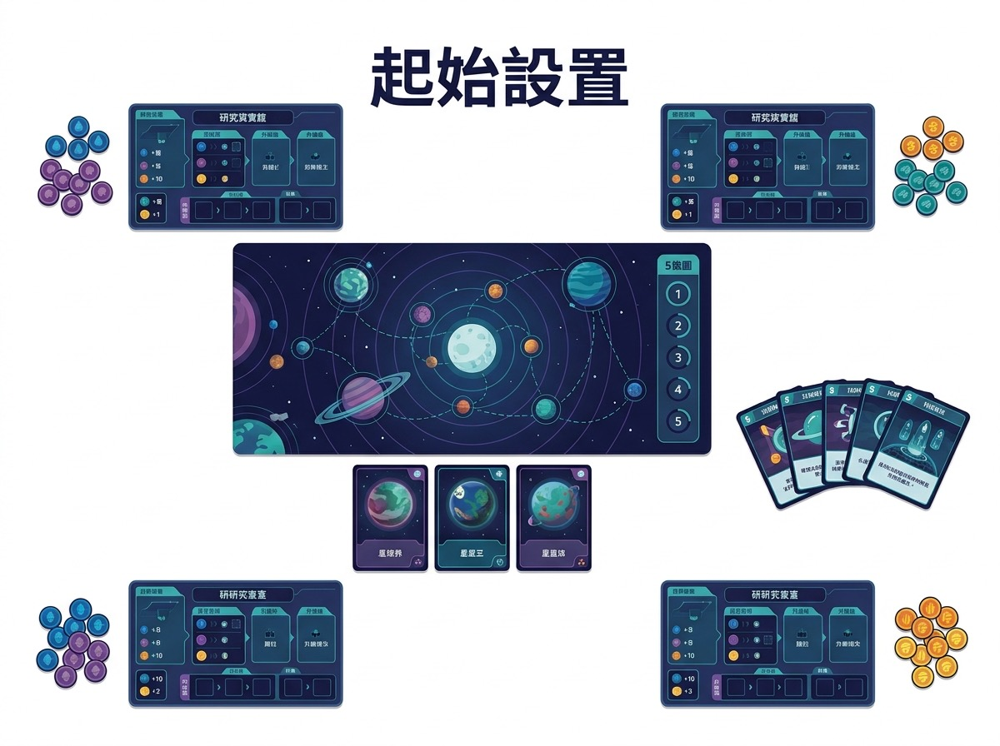
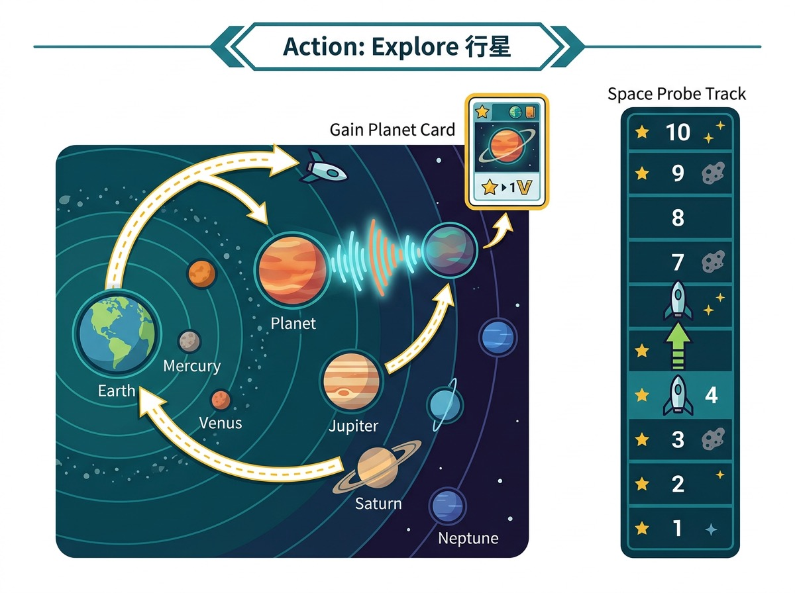

← 返回桌遊列表
✅ 完整教學
搜尋外星文明嘅中重歐
SETI: Search for Extraterrestrial Intelligence (SETI)
出版: Czech Games Edition (CGE) · 類別: 策略, 太空, 中重歐
SETI: Search for Extraterrestrial Intelligence (SETI) — Czech Games Edition (CGE)
🎲
玩家扮演科學家搜尋外星文明, 透過發射訊號同分析回應賺分。策略 + 中重歐, 5 round, 中高難度。2024 年 Kennerspiel des Jahres 候選。1-4 人友善, 單人 mode 都有。教學 30 min, 一局 90-120 min。
為咩好玩: 🎲 搜尋外星文明嘅中重歐
一句話總覽
玩家扮演科學家搜尋外星文明, 透過發射訊號同分析回應賺分。策略 + 中重歐, 5 round, 中高難度。2024 年 Kennerspiel des Jahres 候選。1-4 人友善, 單人 mode 都有。教學 30 min, 一局 90-120 min。
玩法 step 圖
Step 1

Step 2

Step 3
SETI: Search for Extraterrestrial Intelligence
搜尋外星文明嘅中重歐
玩法簡介
SETI 係 2024 年 Czech Games Edition (CGE) 出嘅中重歐策略遊戲, 設計師係由負責 Through the Ages 同 Codenames 嘅 Vlaada Chvátil。遊戲背景設定喺現代, 玩家扮演太空總署嘅科學家團隊, 透過發射訊號、探測行星、分析數據去搵外星文明, 賺最多分數。
SETI 嘅核心機制係「自家計劃板 + 太陽系圖版」嘅雙層行動系統: 每個玩家自己嘅 Mothership 板 (類似自家 board) 上面 plan 5 round 嘅行動, 行動包括發射訊號、探測行星、收集外星數據、升級技術。執行階段, 探測器會喺太陽系圖版飛行, 喺行星上收集樣本, 帶返地球分析。中重歐設計令 SETI 有 4 個主要得分路徑: 外星文明卡 (高難度高 VP)、行星卡 (穩定得分)、技術升級 (長期優勢)、訊號任務 (短期 bonus)。
呢個 game 適合 1-4 人, 單人都好玩 (有 AI / 自動對手), 教學時間 30 分鐘, 一局 90-120 分鐘, 難度中等至進階。2024 年 Kennerspiel des Jahres 入圍 (最終由 e-Mission 勝出), BGG 排名曾經打入 top 30。
完整流程 (Step by Step)
Step 1: 設置
每個玩家攞 1 塊 Mothership 板, 加 4 個探測器 (自己顏色)。中央放太陽系圖版, 上面有 4 個行星區域 (水星 / 火星 / 木星 / 外太陽系), 每區有 1-3 隻行星卡。外星文明區域放喺圖版頂部, 5 疊外星卡 (唔同顏色, 唔同 VP)。每個玩家 5 個 Energy token, 開始 round 1。
Step 2: 計劃階段
每個 round 開始, 玩家喺自己 Mothership 板上 plan 行動。板上有多個行動格: 發射訊號 (1 Energy, 落 note 喺訊號 track)、探測行星 (1 Energy + 1 探測器, 將探測器放到目標行星)、分析數據 (用探測器喺地球上做 action, 賺 VP 或 資源)、升級技術 (永久能力)。每個 action 都需要 1 個 round token, 5 round token 用晒就 execute。
Step 3: 執行階段
5 round token 全部 plan 好, 開始 execute。執行時每個 round 揭開其中 1 個 plan token, 執行該 round 嘅 action。探測器會喺太陽系飛行 (可以 move 多個行星), 每到達新行星可以選擇 (a) 收集行星卡 (即時 VP) 或 (b) 探測 (賺外星數據 token)。
Step 4: 發射訊號
玩家 plan 階段可以發射訊號到太陽系 (1 Energy)。訊號會留喺 track 上面, 之後 round 對應 track 位置有 bonus 行動。高手會善用訊號 track 嘅「免費行動」, 1 個 Energy 換 2 個 action, 慳 Energy 用喺其他地方。
Step 5: 探測器升級
用 Energy 升級探測器: 速度 +1 (可以飛遠啲)、負載 +1 (可以收集多啲數據)、掃描 +1 (更容易 hit 外星文明)。升級係長期投資, 3 個探測器升滿 = 9 個 action 嘅差距。
Step 6: 外星文明卡
外星文明卡喺圖版頂部, 5 個顏色代表 5 個外星種族 (綠 / 藍 / 紅 / 紫 / 金)。玩家要透過探測器 + 訊號 hit 到對應外星區域, 再花資源去「解碼」。每張外星卡 8-15 VP, 仲有特殊能力 (例如再行多 1 格 / 額外 Energy)。5 種外星卡全部 hit 過 = 額外 20 VP bonus。
Step 7: 行星卡收集
每個行星有 1-3 隻行星卡, 收集即賺 2-5 VP。行星卡唔同外星卡, 比較穩定, 因為你控制到探測器去邊。高手會計算「邊個行星最高 VP / 距離比」, 優先去高 VP planet。
Step 8: 結束 + 結算
5 round 玩完。結算 (a) 行星卡 VP (b) 外星文明卡 VP (c) 技術升級 bonus (d) 訊號 track bonus (e) 5 種外星 hit 過嘅話額外 20 VP。最高分贏, 平手進 tiebreaker。
戰術提示 (5+ 條)
- 「訊號 track = 免費 action」: 發射 1 個訊號 = 1 Energy, 但訊號行到 track 對應位置會觸發免費 action (例如再行 1 格探測器, 免費升級, 免費資源)。高手會計算「邊個 track 位置最抵」, 唔係亂發訊號。建議: 第 1 round 計劃時已經要想 track 4-5 嘅 bonus 觸發。
- 「探測器 move vs upgrade」: 每 round 探測器可以行 1-2 格, 但升級可以 +1 速度, 即係升滿嘅探測器 1 round 行 3-4 格。高手會優先升級 1-2 隻探測器去「搶高 VP 行星」, 唔係分散升級 3 隻。
- 「外星文明卡 = 高風險高回報」: 外星卡 8-15 VP, 對比行星卡 2-5 VP, 但外星卡需要「hit 對應區域」, 概率低 (1/6 to 1/3)。高手會保留 1-2 個探測器做「外星探測專用」, 其他探測器做「行星收集」。
- 「單人場: 自動對手代替」: 單人場 SETI 有自動對手 (Automa), 玩法同多人場類似, 但 Automa 自動做基本行動 (收集行星, 發訊號), 你做玩家行動 (升級 / 探外星 / 大決策)。單人場適合練習 plan + execute 嘅節奏, 唔需要 4 個朋友約時間。
- 「1-4 人場都係 plan-execute」: SETI 唔似 Catan 咁有「等其他人」嘅 downtime, plan 階段各自 plan, execute 階段各自執行。1 人 90 min, 2 人 100 min, 4 人 120 min, downtime 唔係線性增加, 所以 4 人場最抵。
- 「技術升級優先順序」: 3 個升級 (速度 / 負載 / 掃描) 之中, 速度 +1 通常最抵 (影響所有探測器 move), 負載 +1 第二 (多 1 個數據), 掃描 +1 第三 (只 hit 外星先用)。高手順序: 速度 > 負載 > 掃描。
Tiebreaker
SETI 嘅 tiebreaker (官方規則書 page 16):
- 主規則: VP 多者勝, 已喺 Step 8 結算。
- 平手 (第一次 tiebreaker): 比較「外星文明卡總數」, 多者勝 (因為外星卡難 hit, hit 到即係高手)。
- 再平手 (第二次 tiebreaker): 比較「行星卡總數」, 多者勝 (行星卡穩定, 反映探測器控制力)。
- 再平手 (第三次 tiebreaker): 比較「訊號 token 數量」, 多者勝 (訊號代表 plan 深度)。
- 再平手 (罕有): 共享勝 (Cooperative win, 5 round 玩完所有玩家 +10 VP bonus)。
來源: SETI 規則書 (CGE 2024) page 16 "End of the Game" 段落, 同 BGG comment (BoardGameGeek thread "SETI tiebreaker rules" 確認)。新手想再確認可以上 BGG: https://boardgamegeek.com/boardgame/418059/seti-search-extraterrestrial-intelligence
推介畀咩人
SETI 喺旺角嘅定位係「中重歐策略, 太空主題, 1-4 人友善」。
- 新手 (❌): 教學時間長 (30 min), 規則複雜 (雙層 plan-execute + 4 個得分路徑), 第一次玩需要 demo 1 局先明。唔建議完全新手開枱。
- 進階 (✅✅) + 專家 (✅✅): 策略深度高, Vlaada Chvátil 嘅 signature 雙層機制, 高手 plan 5 round 之後 execution 完美 chain, 新手會浪費 action。
- 家庭 (⚠️): 1-4 人場 OK, 但教學時間長, 老人家可能 hold 唔住規則。
- 朋友群 (✅): 3-4 人場最佳, 旺角太空愛好者首選, 4 人 plan 階段 30 分鐘會好投入。
- 情侶 (⚠️): 2 人場好玩但 plan 階段比較靜 (各自 plan), 唔似其他合作 game 咁有對話。
- 2 人 (✅): 2 人場好玩, 1 vs 1 嘅策略對戰最 direct。
- 6+ 人 (❌): 官方 4 人 max, 6+ 人場冇得玩。
旺角進階 / 太空愛好者, 問「我想試中重歐策略, 揀咩好?」SETI 係 2024 最佳選擇之一 (但要 1-4 人, 教學時間 30 min)。
新手 query 對應
- 「我想試中重歐策略, 揀咩好?」: SETI 係 2024 年 Kennerspiel 入圍, Vlaada Chvátil 設計, 中重歐策略深度高。3-4 人場最佳, 教學 30 min, 一局 90-120 min。
- 「1 個人想玩 strategy game」: SETI 單人場有 Automa 自動對手, 適合 1 個人練習 plan-execute 節奏, 90 min 玩完。
- 「太空主題, 有咩 game?」: SETI 太空主題, 2024 年新版, 旺角太空愛好者首選, 但中文版暫時只有英文版 (CGE 官方)。
- 「90 min 內想完一局」: SETI 一局 90-120 min, 90 分鐘會超時。建議預 2 小時, 玩晒 5 round。
- 「新手第一次玩中重歐, 揀咩好?」: SETI 唔建議完全新手第一次玩中重歐, 建議先玩 Wingspan (中歐) 或 Cascadia (入門歐) 再轉 SETI。
特殊規則 / 變體
- 1 人場 (Automa): 官方支援, 自動對手, 90 min 玩完, 適合 1 個人。
- 2 人場: 官方支援, 1 vs 1 策略對戰, 100 min 玩完。
- 3 人場: 官方支援, 最佳人數之一, 110 min。
- 4 人場: 官方支援, 最多 4 人, 120 min, 太空愛好者首選。
- 5+ 人 (官方唔支援): 官方 4 人 max, 5+ 人場唔可以玩。
- House Rule — 縮短 4 round: 部分玩家會將 5 round 改 4 round, 加快節奏, 但失去 plan-execute 嘅雙層深度。
- House Rule — 外星文明 hit 率提高: 部分玩家會將外星 hit 概率由 1/6 改 1/4, 降低難度, 適合家庭場。
- 官方擴充 (待查): SETI 而家未有官方擴充 (2024 年新出), 但 BGG 已經有 fan-made scenario 包, 進階客可以上 BGG 查。
- 新手可以 demo 半局: SETI 教學時間長, 建議新手第一次玩 demo 半局 (round 1-2), 再正式 play 5 round。
參考
🛒 配合資源 (Cross-sell)
新手可以一併推薦:
- DOSHA 木盒: @dosha.woodcraft 嘅木製收納盒, 配 SETI: Search for Extraterrestrial Intelligence 嘅 card 完美 fit。
- 旺角新手桌遊: 旺角實體店, 新手 review 即場試玩。
延伸閱讀
📊 BoardGameGeek 詳細資料 →
← 返回桌遊列表